| 路径功能 |
程序段格式 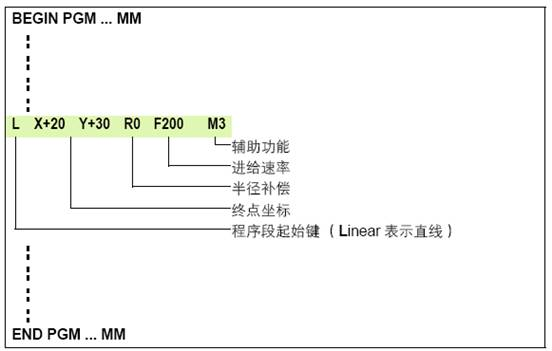 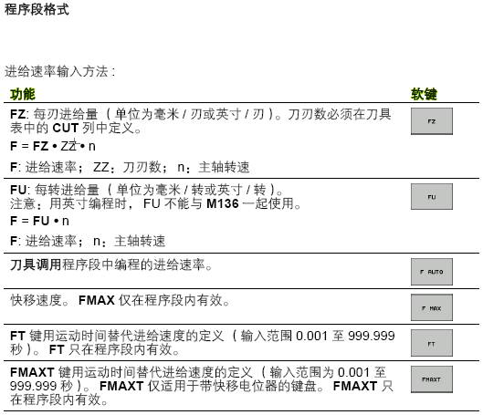 任务：打孔 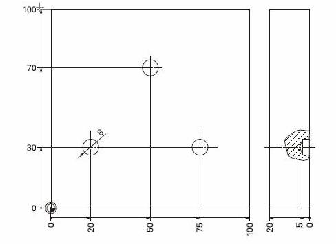 方案：打孔 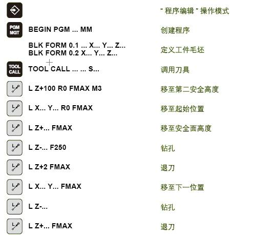 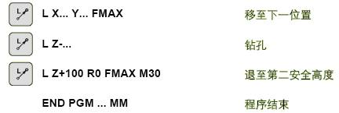 解决方法： 孔 完整程序 0 BEGIN PGM 6BAS151 MM 1 BLK FORM 0.1 Z X+0 Y+0 Z-20 2 BLK FORM 0.2 X+100 Y+100 Z+0 工件毛坯定义 3 TOOL CALL 1 Z S2200 刀具调用 4 L Z+100 R0 FMAX M3 第二安全高度 5 L X+20 Y+30 R0 FMAX 孔1 6 L Z+2 R0 FMAX 7 L Z-5 R0 F250 钻孔 8 L Z+2 R0 FMAX 9 L X+75 R0 FMAX 孔2 10 L Z-5 11 L Z+2 R0 FMAX 12 L X+50 Y+70 R0 FMAX 孔3 13 L Z-5 14 L Z+100 R0 FMAX M30 15 END PGM 6BAS151 MM 任务：倒圆/倒角 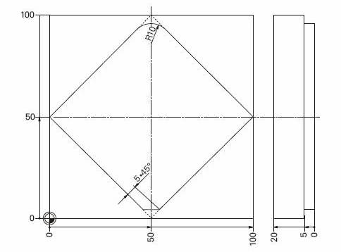 解决方法： 倒圆/ 倒角 完整程序 0 BEGIN PGM 6BAS153 MM 1 BLK FORM 0.1 Z X+0 Y+0 Z-20 2 BLK FORM 0.2 X+100 Y+100 Z+0 工件毛坯定义 3 TOOL CALL 3 Z S1150 刀具调用 4 L Z+100 R0 FMAX M3 第二安全高度 5 L X-30 Y+50 R0 FMAX 辅助点（R0） 6 L Z+2 R0 FMAX 7 L Z-5 R0 F2000 8 L X+0 Y+50 RL F350 轮廓起点（RL/RR） 9 L X+50 Y+100 10 RND R10 倒圆圆弧 11 L X+100 Y+50 12 L X+50 Y+0 13 CHF 5 倒角 14 L X+0 Y+50 15 L X-30 R0 FMAX 辅助点（R0） 16 L Z+100 R0 FMAX M30 程序结束 17 END PGM 6BAS153 MM 接近和离开轮廓 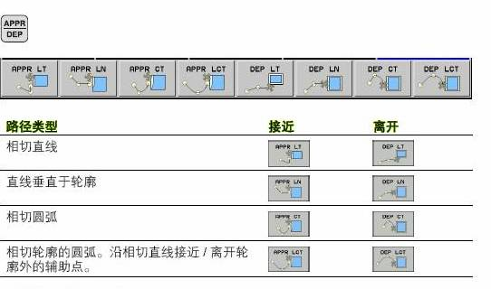 平滑接近（APPR) 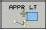 起点1：LX-30 Y-20 R0 F..M.. 平滑接近第一 APPR LT X0 Y0 LEN20 个轮廓点2：RLF..M.. 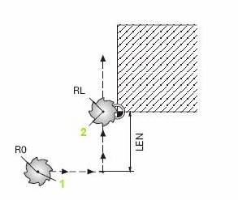 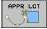 起点1：L X-40 Y-20 R0 F.. M.. 平滑接近第一 APPR LCT X0 Y0 R10 个轮廓点2：RL F.. M.. 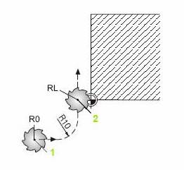 平滑离开（DEP) 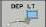 最后一个轮廓 L X+0 Y+0 RLF..M.. 点1： 平滑离开终 DEP LT LEN15 F..M.. 点2： 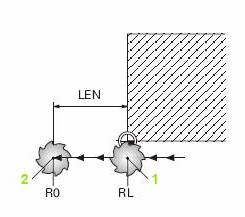 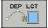 最后一个轮廓 L X+0 Y+0 RLF..M.. 点1： 平滑离开终 DEP LCT X-40 Y-20 R10 点2：F..M.. 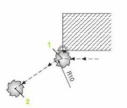 圆弧运动：以圆心CC为圆点的圆弧路径C 圆心 .相对工作原点的绝对坐标值 CC X... Y... .相对最后一个编程位置的相对坐标值 CC IX... IY... .使用最后一个编程位置 CC 圆弧路径 输入 .圆弧终点 C X... Y... .旋转方向 DR± .圆弧运动前，刀具位于圆弧起点处 .圆弧运动前必须定义圆心 整圆举例 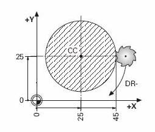 任务：已知圆心的圆弧C 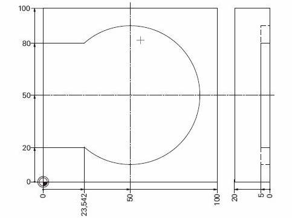 BEGIN PGM... MM 创建程序 BLK FORM 0.1 ... X... Y... Z.. 定义工件毛坯 BLK FORM 0.2 X... Y... Z... TOOL CALL ... ... S... 调用刀具 L... 移至第二安全高度 L... R0 移至辅助点 R0 L... 下刀深度 APPR ... RL/RR 接近轮廓 L X... 直线 CC... 设置圆心 C... 圆弧运动 DEP... 离开（辅助点） L... 退刀，程序结束 解决方法： 已知圆心的圆弧C 圆弧运动：相切链接圆弧路径CT 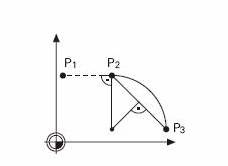 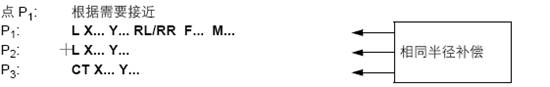 输入 圆弧终点坐标 在圆弧路径CT前应对一个轮廓元素（圆弧或直线）编程，即圆弧路径CT前必须至少有两个定位程序段。 任务：相对链接轮廓（直角坐标） 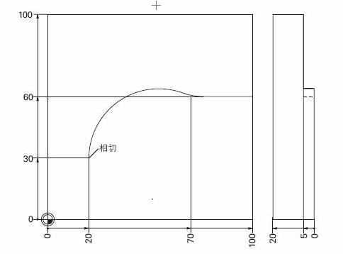 解决方法： 相切连接轮廓（直角坐标） 完整程序 0 BEGIN PGM 6BAS207 MM 1 BLK FORM 0.1 Z X+0 Y+0 Z-20 2 BLK FORM 0.2 X+100 Y+100 Z+0 3 TOOL CALL 3 Z S1500 4 L Z+100 R0 FMAX M3 第二安全高度 5 L X+0 Y-60 R0 FMAX 辅助点 6 L Z+2 R0 FMAX 7 L Z-5 R0 F2000 8 APPR LT X+20 Y+0 LEN20 RL F350 接近轮廓起点 9 L Y+30 10 CT X+70 Y+60 相切圆弧 11 L X+100 12 DEP LT LEN20 13 L Z+100 R0 FMAX M30 14 END PGM 6BAS207 MM 圆弧运动：已知半径的圆弧CR 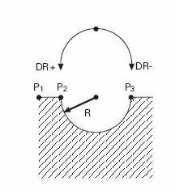 点P1 根据需要接近 （P1 LX...Y...F...M...) P2: LX...Y...RL/RR P3: CR X...Y...R±DR± 输入 .圆弧终点坐标 .圆半径 .旋转方向 .注意半径的代数符号 .在使用CR功能时，不能在一个程序段中编程一个整圆 圆弧运动：已知半径的圆弧CR 圆弧半径R .圆心角CCA*小于180° .圆半径代数符号：R+ 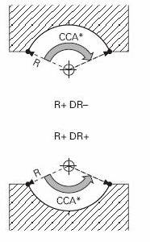 圆心角CCA*大于180° 圆半径代数符号：R- 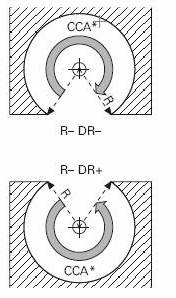 *CCA .CIRCLE CENTER ANGLE(圆心角） 任务：用CR功能的锁孔 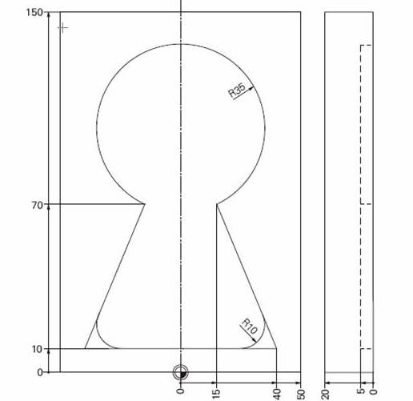 解决方法： 用CR 功能的锁孔 完整程序 0 BEGIN PGM 6BAS365 MM 1 BLK FORM 0.1 Z X-50 Y+0 Z-20 2 BLK FORM 0.2 X+50 Y+150 Z+0 3 TOOL CALL 1 Z S1500 4 L Z+100 R0 FMAX M3 5 L X+0 Y+30 R0 FMAX 辅助点 6 L Z+2 R0 FMAX 7 L Z-5 R0 F300 8 APPR LCT X+0 Y+10 R3 RL 轮廓接近 9 L X+40 10 RND R10 11 L X+15 Y+70 辅助点 12 CR X-15 R-35 DR+ 圆弧路径 13 L X-40 Y+10 14 RND R10 15 L X+0 16 DEP LCT X+0 Y+30 R3 轮廓离开 17 L Z+100 R0 FMAX M30 18 END PGM 6BAS365 MM 任务：圆弧运动 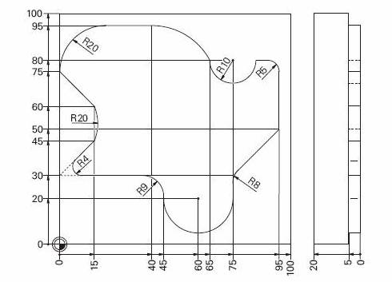 解决方法： 圆弧运动 完整程序 0 BEGIN PGM 6BAS251 MM 1 BLK FORM 0.1 Z X+0 Y+0 Z-20 2 BLK FORM 0.2 X+100 Y+100 Z+0 3 TOOL CALL 7 Z S2500 R4 4 L Z+100 R0 FMAX M3 5 L X+20 Y-20 R0 FMAX 辅助点（R0） 6 L Z+2 R0 FMAX 7 L Z-5 R0 F500 8 APPR LCT X+20 Y+30 R3 RL F300 轮廓点1，平滑接近 9 L X+0 10 RND R4 11 L X+15 Y+45 12 CR X+15 Y+60 R+20 DR+ 13 L X+0 Y+75 14 CR X+20 Y+95 R+20 DR- 15 L X+40 16 CT X+65 Y+80 17 CC X+75 Y+80 18 C X+85 Y+80 DR+ 19 L X+95 20 RND R5 21 L Y+50 22 L X+75 Y+30 23 RND R8 24 L Y+20 25 CC X+60 Y+20 26 C X+45 Y+20 DR- 27 L Y+30 28 RND R9 29 L X+20 最后一个轮廓点 30 DEP LCT X+20 Y-20 R3 F500 辅助点（R0） 31 L Z+100 R0 FMAX M30 32 END PGM 6BAS251 MM 极坐标 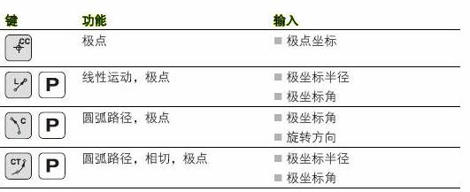 极坐标：平面选择和极点定义 输入极点（极坐标原点） .CC X… Y… 绝对式 .CC IX… IY… 增量式 .CC 传输最后一个编程位置，也就是必须先定义一对坐标值。 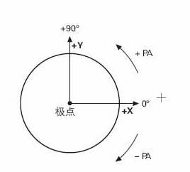 角度参考轴X 极点坐标X/Y .极点编程不会导致轴运动。 .极坐标的尺寸数据为相对极点的尺寸。 .只能用直角坐标定义极点CC。 .定义新极点之前，现极点CC始终有效。 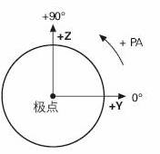 .角度参考轴Y 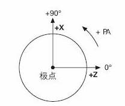 .角度参考轴Z .极点坐标Z/X 输入 极坐标半径PR：距极点的距离 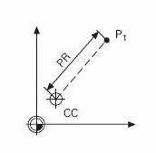 极角PA：由角度参考轴（=0°直线）到极点与点P1的连线间夹角 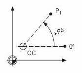 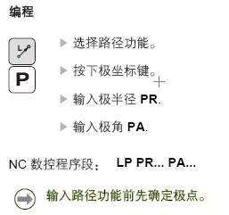 举例 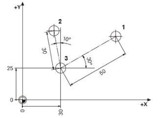 可用方法： CC X+30 Y+25 L X+30 Y+25 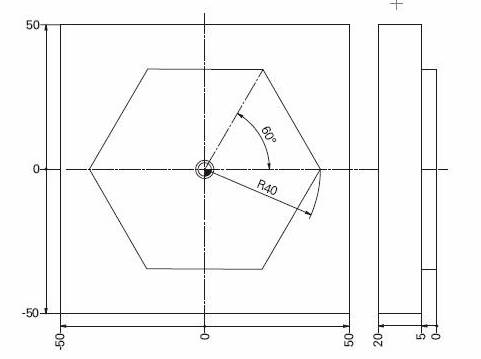 解决方法： 极坐标的六边形 完整程序 0 BEGIN PGM 6BAS213 MM 1 BLK FORM 0.1 Z X-50 Y-50 Z-20 2 BLK FORM 0.2 X+50 Y+50 Z+0 3 TOOL CALL 3 Z S2000 4 L Z+100 R0 FMAX M3 5 CC X+0 Y+0 设置极点 6 LP PR+80 PA+0 R0 FMAX 极坐标辅助点 7 L Z+2 R0 FMAX 8 L Z-5 R0 F350 9 APPR PLCT PR+40 PA+0 R3 RL 轮廓起点，平滑接近 10 LP PA-60 11 LP PA-120 12 LAP PA+180 13 LAP PA+120 14 LAP PA+60 15 LAP PA+0 16 DEP PLCT PR+80 PA+0 R3 平滑离开 17 L Z+100 R0 FMAX M30 18 END PGM 6BAS213 MM 极坐标：圆弧路径CP 输入 .圆弧终点极角PA .旋转方向DR± 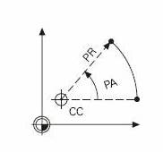 编程圆弧路径CP 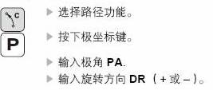 NC数控程序段：CP PA...DR... 圆弧（极坐标）与垂线的叠加运动用于编程一条螺旋线。
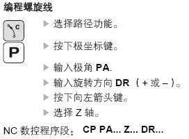 任务：极圆CP 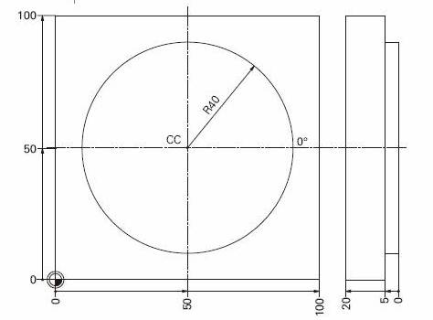 BEGIN PGM ... MM 创建程序 BLK FORM 0.1 ... X... Y... Z... 定义工件毛坯 BLK FORM 0.2 X... Y... Z... TOOL CALL ... ... S... 调用刀具 L... 移至第二安全高度 CC X... Y... 确定极点 LP... 极坐标下的辅助点 ... 轮廓 ... 辅助点 ... 退刀，程序结束 解决方法： 极圆CP .圆弧终点极坐标PR 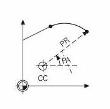 编程 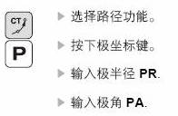 NC数控程序段：CTP PR...PA... 任务：相切圆弧路径CTP 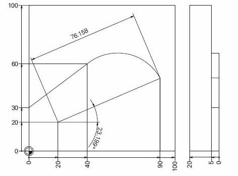 解决方法： 相切圆弧路径CTP 完整程序 0 BEGIN PGM 6BAS212 MM 1 BLK FORM 0.1 Z X+0 Y+0 Z-20 2 BLK FORM 0.2 X+100 Y+100 Z+0 3 TOOL CALL 13 Z S4000 4 L Z+100 R0 FMAX M3 5 L X-30 Y-30 R0 FMAX M3 辅助点 6 L Z-5 FMAX 7 APPR LT X+0 Y+0 LEN5 RL F250 M8 接近轮廓起点 8 L X+0 Y+30 9 L X+40 Y+60 10 CC X+20 Y+20 极点 11 CTP PR+76.158 PA+23.199 圆弧路径，极坐标相切 12 L Y+0 13 DEP LT LEN5 离开 14 L Z+100 R0 FMAX M30 15 END PGM 6BAS212 MM
|